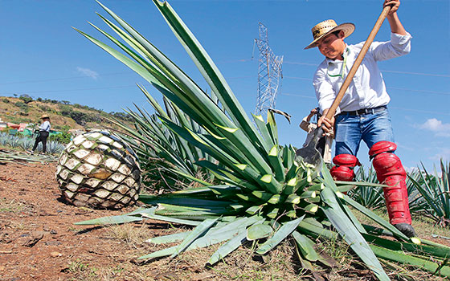
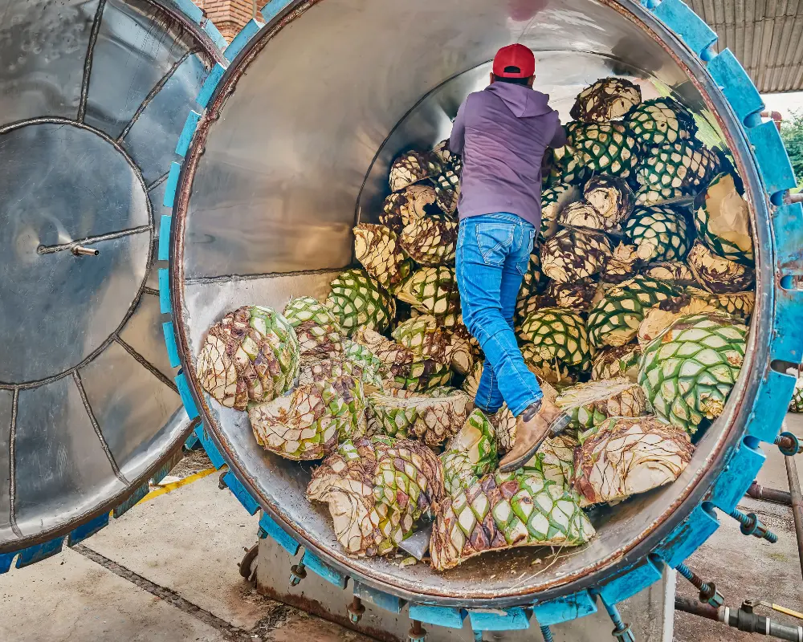
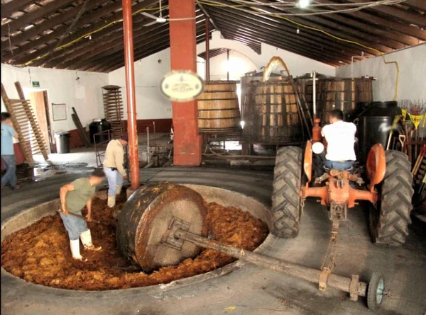
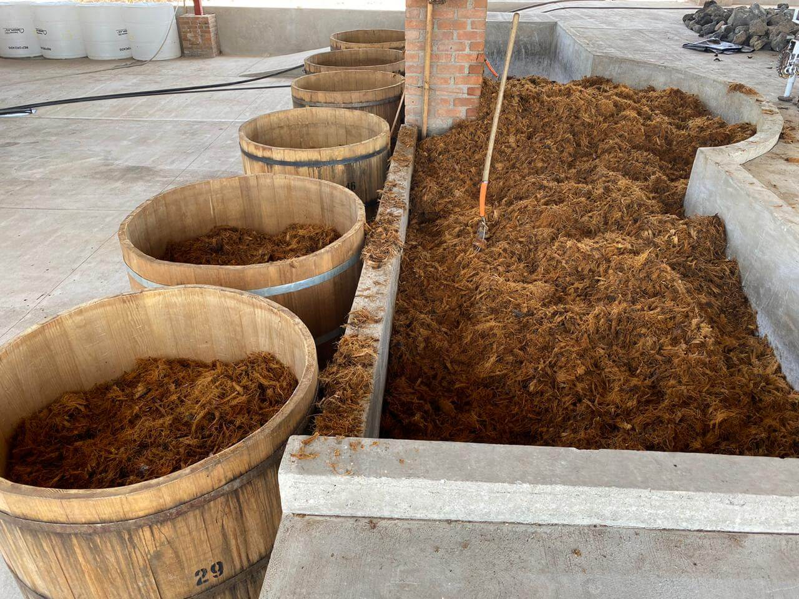
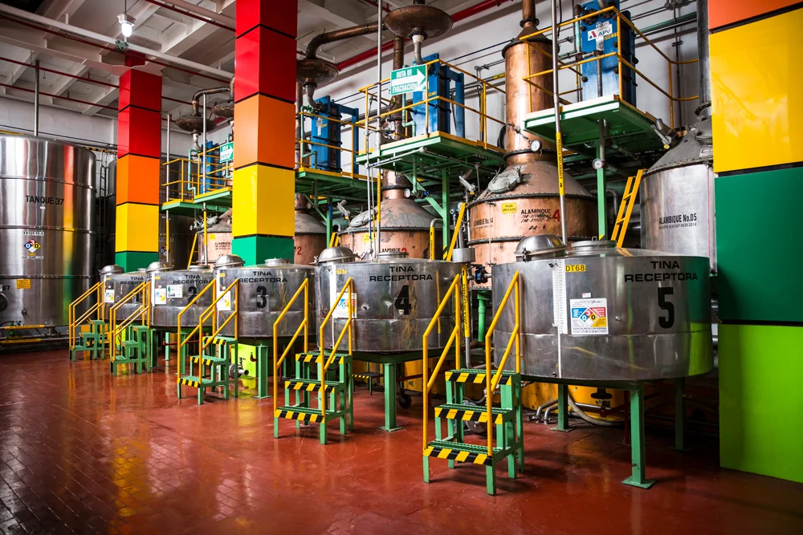
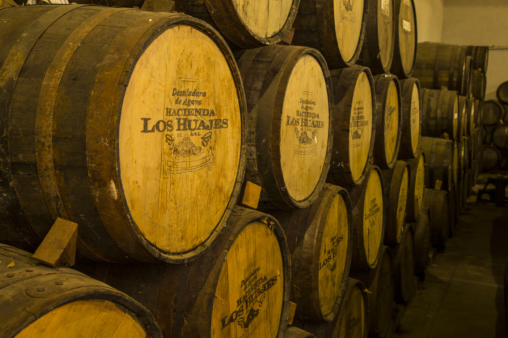

Todo comienza en los campos de Jalisco, donde nuestros jimadores seleccionan cuidadosamente cada agave. Con una precisión heredada por generaciones, cortan las pencas para dejar solo el corazón, la piña, que después de 7-10 años ha alcanzado su punto óptimo de maduración.
It all begins in the fields of Jalisco, where our jimadores carefully select each agave. With precision inherited through generations, they cut the leaves to leave only the heart, the piña, which after 7-10 years has reached its optimal ripeness.

Las piñas se cocinan lentamente en hornos de mampostería durante 48 horas. Este proceso tradicional transforma los almidones en azúcares fermentables y le da al tequila sus notas características a agave cocido y caramelo.
The piñas are slowly cooked in masonry ovens for 48 hours. This traditional process transforms starches into fermentable sugars and gives the tequila its characteristic notes of cooked agave and caramel.

Una vez cocidas, las piñas se trituran en un molino de piedra volcánica para extraer los jugos dulces. Este método ancestral, conocido como "tahona", respeta la integridad de la fibra y produce un mosto de calidad superior.
Once cooked, the piñas are crushed in a volcanic stone mill to extract the sweet juices. This ancestral method, known as "tahona," respects the integrity of the fiber and produces a must of superior quality.

El mosto fermenta en tinas de madera de roble durante 7-10 días, utilizando levaduras silvestres que habitan naturalmente en nuestra destilería. Este proceso lento y natural desarrolla los aromas complejos que caracterizan a Pozo Santo.
The must ferments in oak wood vats for 7-10 days, using wild yeasts that naturally inhabit our distillery. This slow, natural process develops the complex aromas that characterize Pozo Santo.

El líquido fermentado se destila dos veces en alambiques de cobre artesanales. La primera destilación produce el "ordinario", y la segunda, cuidadosamente controlada por nuestros maestros tequileros, da vida al espíritu puro de Pozo Santo.
The fermented liquid is distilled twice in artisanal copper stills. The first distillation produces the "ordinario," and the second, carefully controlled by our master distillers, brings to life the pure spirit of Pozo Santo.

Según la variedad, nuestro tequila descansa en barricas de roble blanco: 2 meses para el Blanco, 6-12 meses para el Reposado, y hasta 3 años para el Añejo. Durante este tiempo, la madera aporta notas de vainilla, caramelo y especias que complementan la pureza del agave.
Depending on the variety, our tequila rests in white oak barrels: 2 months for Blanco, 6-12 months for Reposado, and up to 3 years for Añejo. During this time, the wood contributes notes of vanilla, caramel, and spices that complement the purity of the agave.

Acompaña a nuestros maestros tequileros en un recorrido por el proceso que da vida a Pozo Santo.
Join our master distillers on a journey through the process that brings Pozo Santo to life.